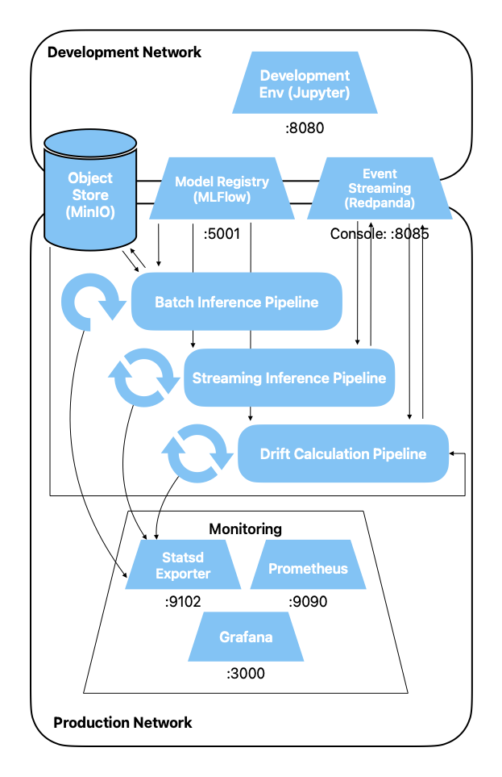
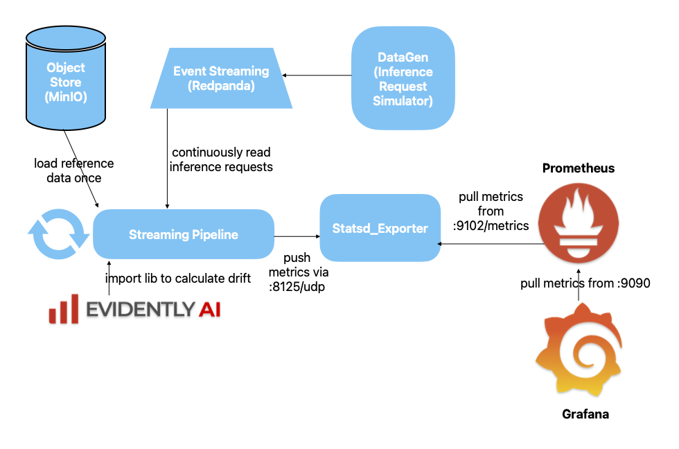

Drift Detection Pipeline
In this exercise we build a streaming pipeline that checks Mushroom inference data for drift
and regularly reports the results to our monitoring infrastructure.
Preparation
Create a new notebook for the implementation of the streaming drift detection pipeline.
Exercises
Architecture
Our architecture now looks as follows. In addition to all infrastructure components, we have
three
pipelines:
- Our batch inference pipeline, which must be triggered periodically
- Our streaming inference pipeline, which runs constantly
Newly added is
- Our streaming drift detection pipeline, which runs constantly
and reports the data drift of our Mushroom raw data to our monitoring infrastructure.

Structure
- Our datagen simulates "Requests for a Prediction" events and sends corresponding
event
notifications to Kafka
- These messages contain the features of a prediction request (or the raw data, since
we don't compute features in our simplified model)
- The drift detection pipeline continuously reads these notifications from Kafka and
collects
all requests until it has an acceptable amount together
- It then compares the current data received from Kafka with the reference dataset
that was used for training the Mushroom model, and calculates per column
a metric that indicates the drift
- The pipeline sends these metrics to Statsd, where they are polled by Prometheus,
which stores the data as a time series
- At the end of the chain, Grafana polls this data from Prometheus to display it in a
dashboard
and raise an alarm if the drift is too large.

Evidently
For comparing two distributions and calculating drift, we use the library
Evidently OSS. Evidently is a
product that offers many possibilities for calculating and visualizing different types of drift.
We only use a very small part of it here, namely the
automatic calculation of two distance measures (normalized Wasserstein distance and normalized
Jensen-Shannon distance), which allow a statement about the deviation of two distributions
from each other.
Evidently contains logic to decide which distance measure is best suited for a given
dataset. For our Mushroom dataset, Evidently has chosen the above-mentioned
metrics. How this decision process works is
documented
here. We will not go further into this choice in the course.
However, it is helpful if you briefly read up on the
Core
Concepts of Evidently. We do not use the
Test Suite functionality of
Evidently in the workshop, you can skip this part.
Reference dataset
Load the training data with which our model was trained as a reference dataset.
If the data in the incoming "Requests for Prediction" deviate too much from those with
which the model was trained, we have data drift and our model will no longer
function optimally.
import pandas as pd
reference_df = pd.read_parquet('s3://traindata/train_raw.parquet', storage_options={"anon": False}).drop("class", axis="columns")
Now we need an Evidently DataDefinition. The documentation can be found
here.
from evidently import Dataset, DataDefinition
data_definition = DataDefinition(
numerical_columns=['cap-shape', 'gill-attachment', 'gill-color', 'stem-color'],
categorical_columns=['cap-diameter', 'stem-height', 'stem-width', 'season']
)
Evidently requires the data in the form of an Evidently DataSet. Create an Evidently Dataset
named reference_dataset from the
reference_df and the above data_definition.
Suggested solution
reference_dataset = Dataset.from_pandas(
reference_df,
data_definition=data_definition
)
Now write a function that receives as arguments the reference DataSet, the data definition and
a Pandas DataFrame.
The reference dataset corresponds to our training data (without label). The DataFrame
corresponds
to the collected inference requests, thus representing current, new data.
Then we make it easy for ourselves and execute an Evidently Report with the
DataDriftPreset. This generates the entire report including visualization, from
which we only need the name of the executed test (stattest_name) as well as the
actual
drift_score per column. This is certainly not a very efficient approach,
as much
is generated that we don't even need. Feel free to optimize further on your own :-)
Complete:
import evidently
from evidently import Report
from evidently.presets import DataDriftPreset
from loguru import logger
from datetime import timedelta
import pandas as pd
def calculate_drift(df: pd.DataFrame, reference_dataset: evidently.Dataset, data_definition: evidently.DataDefinition) -> tuple[tuple[str], tuple[float]]:
logger.info(f"Received window of length {len(df)}")
# turn dataframe into dataset
inference_dataset = Dataset.from_pandas(df, data_definition=data_definition)
# define and execute evidently standard drift report with the DataDriftPreset
# your code goes here
# extract an iterable of features and a dict containing stattest_name and drift_score per column
# one entry of the dict should look like this:
# {'cap-diameter': {'drift_score': 0.1, 'stattest_name': 'Jensen-Shannon_distance'}}
# for the stattest_name value, you need to replace spaces by underscores
# the drift score must be of type float
# your code goes here
return features, metrics
Suggested solution
import evidently
from evidently import Report
from evidently.presets import DataDriftPreset
from loguru import logger
from datetime import timedelta
import pandas as pd
def calculate_drift(df: pd.DataFrame, reference_dataset: evidently.Dataset, data_definition: evidently.DataDefinition) -> tuple[tuple[str], tuple[float]]:
logger.info(f"Received window of length {len(df)}")
# turn dataframe into dataset
inference_dataset = Dataset.from_pandas(df, data_definition=data_definition)
# define and execute evidently standard drift report with the DataDriftPreset
data_drift_dataset_report = Report([DataDriftPreset()])
report_result = data_drift_dataset_report.run(reference_data=reference_dataset, current_data=inference_dataset)
# extract a list of features and calculated drift metrics from report
report_whole_output = report_result.dict()
feature_dict_list = report_whole_output['metrics'][1:]
filtered_list = [
{
'column': item['config']['column'],
'method': item['config']['method'],
'value': item['value']
}
for item in feature_dict_list
]
metrics = {
item['column']: {
'drift_score': item['value'],
'stattest_name': item['method'].replace(' ', '_')
}
for item in filtered_list
}
features, metrics = zip(*metrics.items())
return features, metrics
Statsd
Now you write a function that loops over all calculated feature/metric pairs and
sends a
gauge to statsd for each pair under the given prefix. We use the
following
Statsd Python
library.
As dataset name use mushroom and as version v1.
import statsd
def report_drift_to_statsd(df: pd.DataFrame, reference_df: pd.DataFrame,
data_definition: evidently.DataDefinition, statsd_client: statsd.client.udp.StatsClient) -> None:
# calculate metric per column
features, metrics = # your code goes here
# push to statsd
# your code goes here
prefix = ...
for ...
Suggested solution
How the string to be passed should look exactly can be found in the file
statsd_metrics-mapping.yml, which we configured in the previous exercise.
import statsd
def report_drift_to_statsd(df: pd.DataFrame, reference_df: pd.DataFrame,
data_definition: evidently.DataDefinition, statsd_client: statsd.client.udp.StatsClient) -> None:
# calculate metric per column
features, metrics = calculate_drift(df, reference_dataset, data_definition)
# push to statsd
prefix = f"drift_metrics.mushroom.v1"
for f, m in zip(features, metrics):
statsd_client.gauge(f"{prefix}.{f}.{m['stattest_name']}", m['drift_score'])
Quix
As in the exercise with the streaming pipeline, we use
Quix
Streams. The setup looks as follows:
from quixstreams import Application
# create main quix object
app = Application(broker_address="event-streaming:9092")
# define topic and message format
input_topic = app.topic(name="mushroom_inference_request", value_deserializer="json")
# create a StreamingDataFrame
sdf = app.dataframe(topic=input_topic)
Now read through the corresponding Quix documentation to learn how to define
windows and how to
aggregate data.
The goal is to define a hopping window, collect data until the window is full, emit the window
for further processing and then calculate drift for one window.
Instantiate the statsd client, define the streaming dataframe and start the
streaming process.
statsd_client = statsd.StatsClient('statsd', 8125)
sdf = (
# we use a hopping window of size 100, and an overlap between windows of 20
# your code here
# collect all items in the window into a list, the result will be accessible via the "events" key
# your code here (use .agg and Collect()
# emit results only for closed windows
# your code here
# now calculate drift statistics on full windows
.apply(lambda m: report_drift_to_statsd(pd.DataFrame(m["events"]), reference_df, data_definition, statsd_client))
)
app.run(sdf)
Suggested solution
statsd_client = statsd.StatsClient('statsd', 8125)
sdf = (
# we use a hopping window of size 100, and an overlap between windows of 20
sdf.hopping_count_window(count=100, step=20)
# collect all items in the window into a list, the result will be accessible via the "events" key
.agg(events=Collect())
# emit results only for closed windows
.final()
# now calculate drift statistics on full windows
.apply(lambda m: report_drift_to_statsd(pd.DataFrame(m["events"]), reference_df, data_definition, statsd_client))
)
app.run(sdf)
Test
You can now execute the above code for the drift detection pipeline. Either you create
a script analogous to the data generator, or you execute it directly from a notebook.
Start the code of the drift pipeline.
Now start the data generator. Give it some speed, so that the drift pipeline also has enough
data to make meaningful comparisons.
docker compose run --rm --name=datagen --entrypoint=python3 development_env mushroom_datagen.py -b 10 -s 75 -r 5 -v
Check whether
- The drift pipeline recognizes windows of size 100
- Updates are visible in Statsd
- Updates are visible in Prometheus
- Data points arrive in Grafana (set the display interval to Last 5 Minutes in
the top right)
If everything works, stop the data generator again.
Drift generation
Now we extend the data generator so that it can insert drift for a column. For
simplicity's sake we hardcode the type of drift
Add another command line argument to the data generator of type int with the
switch -d for drift_factor and default 1.
Suggested solution
parser.add_argument(
"-d",
"--drift_factor",
type=int,
help="Start factor for simulating drift",
default=1,
)
Pass the argument through all necessary function calls and function headers.
Suggested solution
Adjustments in the
- run() call
- in the run() declaration
- in the generate_event() call
- in the generate_event() declaration
Now multiply the value of the season column with the drift
in the generate_event() function above the return statement.
Suggested solution
new_row['season'] = new_row['season']*drift
Delete all previously made notifications and measurements.
- stop the data generator and the drift pipeline
- delete all topics in the Redpanda console
- save your open notebooks
- stop all services (docker compose down)
- delete the state folder, which the drift pipeline automatically creates (in
the directory where the notebook or script of the drift pipeline is located)
- optional: delete the file grafana_work/data/grafana.db (also deletes all
previous dashboards)
- restart the services
Now you build a new dashboard in Grafana that shows you the drift. First you generate
traffic so that you
have metrics to choose from in Grafana.
First start the drift detection pipeline.
Then generate data, first for about a minute without drift:
docker compose run --rm --name=datagen --entrypoint=python3 development_env mushroom_datagen.py -b 10 -s 75 -r 5
Now you build the new dashboard in Grafana that shows you the drift. As a simple variant,
you can make two line charts, one for a column without drift, and one for a
column with drift.
Now generate inference requests with data that contains drift:
docker compose run --rm --name=datagen --entrypoint=python3 development_env mushroom_datagen.py -b 10 -s 75 -r 5 -d 2
Let this run for about a minute again, then you can stop and increase the drift to 3.
You should now be able to observe in Grafana how the drift for the season column
increases.
Wrap-up
In this exercise you built a stream processing pipeline that monitors inference requests for
our Mushroom model for data drift and reports the results to our monitoring
infrastructure.
In doing so, we again took a few shortcuts, which is justifiable within the framework of a
course,
but we should also be aware of them:
- We had Evidently calculate an entire report, instead of just the metric
that
we need
- We did not worry about scalability. However, with our setup and Quix, the
pipeline is already designed for scalability.
- Our message format was very simple and without any metadata
- Our message format was a simple json, without schema and validation
- We hardcoded some things and didn't cleanly decouple them (e.g. feature types,
topic)
- No tests, no clean error handling
And in particular
We only check the raw data for drift. It is of course also recommended to check features. This
becomes more important as the number of features and models increases, and is only
sensibly implementable with
a feature store.